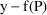
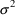
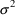
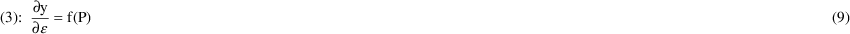
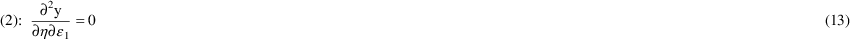
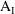
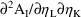
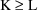
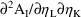
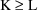

NONMEM Users Guide Part VI - PREDPP - Chapter IV
IV. The ERROR routine
IV.A. Modeling Residual Error
IV.B. Implementation in ERROR
IV.B.1. Implementation of the Model for Residual Error
IV.B.2. Implementation of a Pharmacodynamic Model
IV.C. ERROR Calling-Protocols
IV.D. Global and Other Reserved Variables
IV.D.A. Global Input Variables
IV.D.B. Global Output Variables
IV.D.C. Miscellaneous Global Variables
IV.E. Displaying ERROR-Defined Items
IV.F. PRED Error-Recovery from ERROR
IV.G. Examples
IV.G.1. Example I: Population Data
IV.G.2. Example II: A Mixture Model
IV.G.3. Example III: Single-Subject Data
IV.G.4. Example IV: Single-Subject Pharmacodynamic Data
IV.H. Other Subroutines That May Be Called
NONMEM Users Guide Part VI - PREDPP - Chapter IV
IV. The ERROR routine
IV.A. Modeling Residual Error
Suppose a set of values for an
individual’s PK parameters is fixed. Let
 denote this set of values, and let
denote this set of values, and let
 denote the prediction under the kinetic model, based on
denote the prediction under the kinetic model, based on
 , for an observation y from the individual. This prediction
is imperfect. Observations that one might imagine obtaining
from the individual, under exactly the same conditions as
accounted for in
, for an observation y from the individual. This prediction
is imperfect. Observations that one might imagine obtaining
from the individual, under exactly the same conditions as
accounted for in
 , would differ from one another. This "residual
variabilty" in observations, "unexplained by
", derives from several sources. One source is random
measurement error. Another important source is model
misspecification error in f or in
, would differ from one another. This "residual
variabilty" in observations, "unexplained by
", derives from several sources. One source is random
measurement error. Another important source is model
misspecification error in f or in
 . The terms ’residual variability’ and
’residual error’ are used here interchangeably.
Residual error, therefore, does not generally refer to error
from some one identified source. Residual error may be
modeled in terms of concomitant variables and random
effects. This modeling, along with the modeling of
interindividual variability in
. The terms ’residual variability’ and
’residual error’ are used here interchangeably.
Residual error, therefore, does not generally refer to error
from some one identified source. Residual error may be
modeled in terms of concomitant variables and random
effects. This modeling, along with the modeling of
interindividual variability in
 , leads to a full statistical model for y. In this section
we describe the models for residual error, and in section B
we discuss how these models can be implemented with PREDPP.
The following discussion parallels that of section
III.D.
, leads to a full statistical model for y. In this section
we describe the models for residual error, and in section B
we discuss how these models can be implemented with PREDPP.
The following discussion parallels that of section
III.D.
The simplest model for y itself
in terms of
is
where
 is the realization of a random variable (which also, through
a mild abuse of notation, is denoted by
is the realization of a random variable (which also, through
a mild abuse of notation, is denoted by
 ) with mean 0. This is a very familiar type model describing
residual variability.
) with mean 0. This is a very familiar type model describing
residual variability.
The difference

may not be entirely unexplainable. For example, it might be
that there are two assays used to measure drug
concentration, and that the difference may vary more widely
with y obtained with one assay than with y obtained with the
other assay. Let Z be a dichotomous-valued concomitant
variable whose value (0 or 1) in the event record for y
identifies the assay used. Then instead of (1) one might
write
where
 has mean zero and variance
has mean zero and variance
 . We have
=
, and if Z=0,
=
, but if Z=1,
. We have
=
, and if Z=0,
=
, but if Z=1,
 =
. The parameter
=
. The parameter
 is the ratio of standard deviations of the concentrations
between the two assays.
is the ratio of standard deviations of the concentrations
between the two assays.
Another simple model for y
is
where the mean and variance of
 are 0 and
are 0 and
 . Here
. Here
 is the coefficient of variation of y. Instead of
is the coefficient of variation of y. Instead of
 having homogeneous variance

, perhaps
as above. Observation values are often significantly
right-skewed distributed (for a fixed x), and so a more
appropriate model might be
having homogeneous variance

, perhaps
as above. Observation values are often significantly
right-skewed distributed (for a fixed x), and so a more
appropriate model might be
where the mean and variance of
 are 0 and
, respectively. This model is equivalent to
are 0 and
, respectively. This model is equivalent to
(See the discussion concerning
models (III.14) and (III.15).)
The difference
could be partly explainable by the compartment being
observed. If two compartments are being observed (say plasma
and urine), and Z is a dichotomous-valued concomitant
variable whose value (0 or 1) in the event record for y
identifies the compartment observed, then one might
write
where the means of both
 and
are 0, and the variances are
and
, respectively. If two observations of two different
compartments are taken far enough apart in time,
and
can be taken to be statistically independent variables. In
this case (6) is formally equivalent to (2) (ignoring
whether Z identifies assay or observation compartment) since
multiple realizations of
and
are 0, and the variances are
and
, respectively. If two observations of two different
compartments are taken far enough apart in time,
and
can be taken to be statistically independent variables. In
this case (6) is formally equivalent to (2) (ignoring
whether Z identifies assay or observation compartment) since
multiple realizations of
 in (2) are assumed to be statistically independent. If,
however, two observations of two different compartments are
taken close enough in time, they may be correlated, and with
NONMEM, it is possible to estimate a correlation between the
two different
in (2) are assumed to be statistically independent. If,
however, two observations of two different compartments are
taken close enough in time, they may be correlated, and with
NONMEM, it is possible to estimate a correlation between the
two different
 variables of model (6); see Guide I, section E.4.
variables of model (6); see Guide I, section E.4.
In all the above models for y,
when all
 ’s are set to their mean value 0, we have
; residual error is 0.
’s are set to their mean value 0, we have
; residual error is 0.
 is the subject-specific prediction of y
is the subject-specific prediction of y
We write
for the typical value of
 , the value with all
, the value with all
 ’s set to 0. We write
’s set to 0. We write
 for the quantity
, the prediction "for the typical individual in the in
the population" (of individuals with given values for
the concomitant variables). It is the population
prediction of y
for the quantity
, the prediction "for the typical individual in the in
the population" (of individuals with given values for
the concomitant variables). It is the population
prediction of y
It may also be regarded as the
typical value of y
The routine ERROR specifies the
model for residual variability. It does so in different
ways, depending on whether ERROR is being called for the
purposes of data analysis or data simulation. For the
purposes of data simulation, the specification closely
follows the type of mathematical expressions shown above. As
with the specification of PK parameters in routine PK, for
the purposes of data analysis, the specification of the
model for residual variability entails partial derivatives
of different types. These different types are defined below.
With the first-order estimation, or with a conditional
estimation method where an
interaction is either absent or ignored, typical
first-partial derivatives of y with respect to the
 ’s must be computed, although subject-specific
first-partial derivatives will also suffice since from the
latter the former can be computed. With the first-order
conditional estimation method with interaction, where an
interaction is not ignored, both subject-specific
first-partial derivatives of y with respect to the
’s must be computed, although subject-specific
first-partial derivatives will also suffice since from the
latter the former can be computed. With the first-order
conditional estimation method with interaction, where an
interaction is not ignored, both subject-specific
first-partial derivatives of y with respect to the
 ’s, as well as mixed-second-partial derivatives, must
be computed.
’s, as well as mixed-second-partial derivatives, must
be computed.
The first-partial derivatives of
y with respect to the
 ’s, evaluated at the subject-specific value of
and at all
’s, evaluated at the subject-specific value of
and at all
 ’s equal to 0, are called the subject-specific
first-partial derivatives of y
’s equal to 0, are called the subject-specific
first-partial derivatives of y
For (1)-(4) and (6) for example,
these derivatives are



The first-partial derivatives of
y with respect to the
 ’s, evaluated at the typical value of
’s, evaluated at the typical value of
 ,
,
 , and at all
, and at all
 ’s set equal to 0, are called the typical
first-partial derivatives of y
’s set equal to 0, are called the typical
first-partial derivatives of y
The derivatives of examples (7),
(8) and (11) are also typical first-partial derivatives, and
the derivatives of examples (9) and (10) are typical
first-partial derivatives when
 takes the value
takes the value
 in those expressions.
in those expressions.
Note that the derivatives under
(3) and (4) are identical. When the model for residual
variability is specified via subject-specific or typical
first-partial derivatives only, NONMEM estimation methods
cannot distinguish between models (3) and (4). That is, the
same fit will result from using either model. In effect, an
assumption is being made that under (4), the variance of
 is small, and that the mean and coefficient of variation of
y are well approximated by
is small, and that the mean and coefficient of variation of
y are well approximated by
 and
and
 , respectively. If, though, the DV data items are the log
transformed observations, and these are modeled with (5),
then this approximation is avoided, and a different fit will
result from that obtained under (3). Yet a different fit
again will be obtained when (4) is specified by including
mixed-second-partial derivatives.
, respectively. If, though, the DV data items are the log
transformed observations, and these are modeled with (5),
then this approximation is avoided, and a different fit will
result from that obtained under (3). Yet a different fit
again will be obtained when (4) is specified by including
mixed-second-partial derivatives.
The mixed-second-partial
derivatives of y are the derivatives of
(for the various
 ’s) with respect to the
’s) with respect to the
 ’s, expressed as functions of the
’s, expressed as functions of the
 ’s and evaluated at all
’s and evaluated at all
 ’s equal to 0. Note that in general these are
different from the derivatives with respect to the
’s equal to 0. Note that in general these are
different from the derivatives with respect to the
 ’s of the subject-specific first-partial derivatives
of y, since first the derivative is taken with respect to
’s of the subject-specific first-partial derivatives
of y, since first the derivative is taken with respect to
 , and then the
, and then the
 ’s are set to 0. However, in virtually all particular
cases they will be the same. Some examples will illustrate
this. The mixed-second-partial derivatives corresponding to
(1)-(4) and (6) are
’s are set to 0. However, in virtually all particular
cases they will be the same. Some examples will illustrate
this. The mixed-second-partial derivatives corresponding to
(1)-(4) and (6) are

It should be emphasized that
 (and
(and
 ) and
are not quantities that the user is expected to compute in
order to compute in turn derivatives such as those given in
(9) and (14); this is PREDPP’s job. One of the
arguments of the routine ERROR is
(
), and the user can make use of it, incorporating it into
partial derivatives of y. Similarly,
is an argument of ERROR.
) and
are not quantities that the user is expected to compute in
order to compute in turn derivatives such as those given in
(9) and (14); this is PREDPP’s job. One of the
arguments of the routine ERROR is
(
), and the user can make use of it, incorporating it into
partial derivatives of y. Similarly,
is an argument of ERROR.
When some mixed-second-partial
derivative is not zero, there is said to be an
 interaction. Such an interaction is taken into account only
by the first-order conditional estimation method with
interaction, and with this method the mixed-second-partial
derivatives must be computed.
interaction. Such an interaction is taken into account only
by the first-order conditional estimation method with
interaction, and with this method the mixed-second-partial
derivatives must be computed.
Routine ERROR allows
specification of the derivatives of
 , rather than of y (presumably, the DV data items are
untransformed data items). That is, the derivatives of
, rather than of y (presumably, the DV data items are
untransformed data items). That is, the derivatives of
 , rather than the derivatives of y itself, may be specified.
If
is given by (5), for example, then
, rather than the derivatives of y itself, may be specified.
If
is given by (5), for example, then
PREDPP transforms
 to
, since it needs the latter. The mixed-second-partial
derivatives of
to
, since it needs the latter. The mixed-second-partial
derivatives of
 are also appropriately transformed.
are also appropriately transformed.
When the data are from a
single-subject, random subject-to-subject variability does
not occur, and in this case random effects describing such
variability do not appear in the model. Only random effects
describing residual variablity appear. Through information
in the NONMEM control stream NONMEM learns that only one of
these two possible types of random effects appears, but not
which type. This, in turn, is communicated to PREDPP, which
then assumes that the only random effects appearing
in the model are those appearing in the model for residual
variability and that the data do indeed come from a single
subject. This assumption has various natural and helpful
consequences. To enable the reader to identify these, they
are explicitly described in this document as being
consequences of the single-subject assumption
See sections B.1, B.2, III.H,
V.H, and V.K.
Starting with NONMEM 7.3, there
is an alternate approach. See "Single-Subject Analysis
using Population with Unconstrained ETAs" in the
Introduction to NONMEM 7. With this approach, there are
multiple subjects in the data set. NONMEM and PREDPP treat
the subjects as part of a population analysis, while the
statistical algorithms treat the data as single-subject.
IV.B. Implementation in ERROR
Specification of the model for
residual variability is done with the required user-supplied
ERROR subroutine. This is described in section B.1. In the
discussion of section A
 denotes the prediction under the kinetic model for a
pharmacokinetic observation, and the residual variability is
that of such an observation. However, in that discussion
denotes the prediction under the kinetic model for a
pharmacokinetic observation, and the residual variability is
that of such an observation. However, in that discussion
 could just as well have denoted a prediction under a
pharmacodynamic model, and the residual variability could be
that of a pharmacodynamic observation. The way a model for
residual variability for a PD observation is specified is
essentially the same way this is done for a PK observation.
However, there are some further considerations, such as how
to obtain a PD prediction. These are discussed in section
B.2.
could just as well have denoted a prediction under a
pharmacodynamic model, and the residual variability could be
that of a pharmacodynamic observation. The way a model for
residual variability for a PD observation is specified is
essentially the same way this is done for a PK observation.
However, there are some further considerations, such as how
to obtain a PD prediction. These are discussed in section
B.2.
IV.B.1. Implementation of the Model for Residual Error
The preface of the ERROR routine
must be
SUBROUTINE ERROR (ICALL,IDEF,THETA,IREV,EVTREC,NVNT,INDXS,F,G,HH)
USE SIZES, ONLY: DPSIZE,ISIZE
USE PRDIMS, ONLY: GERD,HERD
IMPLICIT REAL(KIND=DPSIZE) (A-Z)
REAL(KIND=DPSIZE) :: EVTREC
INTEGER(KIND=ISIZE) :: ICALL,IDEF,IREV,NVNT,INDXS
DIMENSION :: IDEF(*),THETA(*),EVTREC(IREV,*),INDXS(*)
REAL(KIND=DPSIZE) :: G(GERD,*),HH(HERD,*)
This is the NONMEM 7 version.
The preface was different with earlier versions of NONMEM.
Global variables GERD and HERD are needed because G and HH
are sized according to the number of etas in the problem. G
may be declared as a 1 dimensional array when the Laplacian
method is not used G(GERD) and HH may be declared
as a 1 dimensional array HH(*) when the first-order
conditional estimation method with interaction is not used.
For simplicity, they will be used that way in the examples
below, although, when G or HH are declared 2 dimensional,
the second subscript should be understood to be
",1"; E.g., HH(1) should be understood to be
HH(1,1). However, when one or both of these methods might be
used later with the given data set, it is a good idea to
develop an ERROR code that allows this.
When ERROR is called by PREDPP,
it is passed values for the vector
 in THETA. It is also passed a complete event record in
EVTREC, the argument record. Specifically, EVTREC(I,J)
contains the Jth data item of the Ith data record of the
event record. ERROR is also passed the total number N of
data records comprising the event record. Typically N=1, and
so the first subscript of EVTREC will always be 1; however,
see chapter II. With NM-TRAN, the CONT data item cannot be
used and N is 1.
in THETA. It is also passed a complete event record in
EVTREC, the argument record. Specifically, EVTREC(I,J)
contains the Jth data item of the Ith data record of the
event record. ERROR is also passed the total number N of
data records comprising the event record. Typically N=1, and
so the first subscript of EVTREC will always be 1; however,
see chapter II. With NM-TRAN, the CONT data item cannot be
used and N is 1.
The argument ICALL functions
similarly to the ICALL argument described in section III.C.
It has several possible values when ERROR is called. The
value 1 signals to ERROR that the routine is being called
for the first time in the NONMEM problem. At such a time
ERROR can store certain initializing information in IDEF
(see below). The value 2 signals to ERROR that the routine
is being called in a regular fashion for data analytic
purposes and that the subject-specific/typical first-partial
derivatives, and if necessary, the mixed-second-partial
derivatives, are to be stored in HH. The value 4 is used in
conjunction with the NONMEM Simulation Step. It signals to
ERROR that the routine is being called for data simulation
purposes and that the simulated value for y is to be stored
in F.
The value 5 signals to ERROR
that the routine is being called in a regular fashion when
expectations are being computed; multiple calls occur.
Expectation blocks are described in the help Guide VIII. No
eta derivatives need be computed.
The value 6 signals to ERROR
that the routine is being called in a regular fashion when
raw data averages are being computed; multiple calls occur.
Raw data average blocks are described in the help Guide
VIII. No eta derivatives need be computed.
If there is abbreviated code in
the $ERROR block that tests for ICALL=0, ICALL=1, or
ICALL=3, this code is moved by NM-TRAN to the INFN routine
as if it had been coded explicitly as part of an $INFN
block. Such code is called $ERROR-INFN code. The
initialization code described for IDEF below is generated in
FSUBS by NM-TRAN regardless of the presence of $ERROR-INFN
code.
At ICALL=2, derivatives of y
with respect to the
 ’s must be computed and stored in HH. With the
first-order estimation method, or with a conditional
estimation method where an
interaction is either absent or ignored, the typical
first-partial derivative of y with respect to
is placed in HH(L) (or, if HH is declared to be
2-dimensional, HH(L,1)). For this purpose, the
’s must be computed and stored in HH. With the
first-order estimation method, or with a conditional
estimation method where an
interaction is either absent or ignored, the typical
first-partial derivative of y with respect to
is placed in HH(L) (or, if HH is declared to be
2-dimensional, HH(L,1)). For this purpose, the
 ’s are enumerated as are their variances in the
specification of the initial estimate of
. For models (1-4) and (6) of section A, we could have the
code
’s are enumerated as are their variances in the
specification of the initial estimate of
. For models (1-4) and (6) of section A, we could have the
code
(1): HH(1) = 1.
(2): IF(Z.EQ.0.) THEN HH(1) = 1.
ELSE
HH(1) = THETA(1)
ENDIF
(3): HH(1) = F
(4): HH(1) = F
(6): HH(1) = 1-Z
HH(2) = Z
F is the 8th argument of ERROR.
On input to ERROR it is the value
or
 under the kinetic model, whichever prediction (typical or
subject-specific) has been computed by PREDPP. Note that
0’s must be explicitly stored in elements of HH as
needed; the HH array is not initialized to 0
immediately before a call to ERROR. However, HH is
initialized to 0 once, early in the problem, so that if
whenever ERROR is called, an element of HH would always be
set to 0, this never actually need be done in ERROR.
under the kinetic model, whichever prediction (typical or
subject-specific) has been computed by PREDPP. Note that
0’s must be explicitly stored in elements of HH as
needed; the HH array is not initialized to 0
immediately before a call to ERROR. However, HH is
initialized to 0 once, early in the problem, so that if
whenever ERROR is called, an element of HH would always be
set to 0, this never actually need be done in ERROR.
With the first-order conditional
estimation method with interaction the subject-specific
first-partial derivative of y with respect to
is placed in HH(L,1), and the mixed-second-partial
derivative of y with respect to
and
 is placed in HH(L,K+1). For models (1-4) and (6) of section
A,
is placed in HH(L,K+1). For models (1-4) and (6) of section
A,
(1): HH(1,1) = 1. HH(1,K+1) = 0.
(2): IF(Z.EQ.0.) THEN
HH(1,1) = 1.
ELSE
HH(1) = THETA(1)
ENDIF
HH(1,K+1) = 0.
(3): HH(1,1) = F
HH(1,K+1) = G(K) (or G(K,1))
(4): HH(1,1) = F
HH(1,K+1) = G(K) (or G(K,1))
(6) HH(1,1) = F
HH(1,K+1) = 0.
HH(2,K+1) = 0.
where actually, HH(1,K+1) and
HH(2,KK+1), wherever they appear, must be set for all K from
1 to the number of
 ’s in the problem.
’s in the problem.
G is the 9th argument of ERROR.
On input to ERROR G(K) (or, if G is declared to be
2-dimensional, G(K,1)) is the value
 or
under the kinetic model, whichever first-partial derivative
(typical or subject-specific) has been computed by PREDPP.
Note that zeros may need to be explicitly stored in elements
of HH; the HH array is not initialized to zero
immediately before a call to ERROR. However, it is
initialized once, early in the run, so that if a mixed
partial derivative is always 0, the corresponding element of
HH need not be set to 0.
or
under the kinetic model, whichever first-partial derivative
(typical or subject-specific) has been computed by PREDPP.
Note that zeros may need to be explicitly stored in elements
of HH; the HH array is not initialized to zero
immediately before a call to ERROR. However, it is
initialized once, early in the run, so that if a mixed
partial derivative is always 0, the corresponding element of
HH need not be set to 0.
ICALL=4 signals that ERROR is
being called during the Simulation Step. During the
Simulation Step, values for
 variables (and
variables (and
 variables; see section B.2) can be simulated in ERROR using
the NONMEM utility routine SIMEPS (and SIMETA; see section
B.2). This in turn allows a value for the observation y to
be computed in a direct fashion, using an expression such as
(1) in section A. The value for y should be returned by
ERROR in the argument F. This necessitates modifying the
value of F input to ERROR. Values returned in HH are
ignored. For an example, see section G.1.
variables; see section B.2) can be simulated in ERROR using
the NONMEM utility routine SIMEPS (and SIMETA; see section
B.2). This in turn allows a value for the observation y to
be computed in a direct fashion, using an expression such as
(1) in section A. The value for y should be returned by
ERROR in the argument F. This necessitates modifying the
value of F input to ERROR. Values returned in HH are
ignored. For an example, see section G.1.
With data from a single subject,
as with population data, during the Simulation Step, values
for y can be computed in ERROR in a direct fashion. However,
NONMEM explicitly recognizes two types of random variables,
 -variables and
-variables and
 -variables, and these two types are nested, i.e. for any set
of fixed values for the
-variables, and these two types are nested, i.e. for any set
of fixed values for the
 -variables, the
-variables, the
 -variables can assume different values, but not conversely.
Whenever nested variables are not needed, only one of
these two types of variables need appear in the entire
statistical model, and by NONMEM convention, these should be
-variables can assume different values, but not conversely.
Whenever nested variables are not needed, only one of
these two types of variables need appear in the entire
statistical model, and by NONMEM convention, these should be
 -variables. With single-subject data there is no
subject-to-subject variability, only nonnested random
variables appear; they appear in the model for residual
variability. Consequently, in this context the expressions
in section A must be understood to have
-variables. With single-subject data there is no
subject-to-subject variability, only nonnested random
variables appear; they appear in the model for residual
variability. Consequently, in this context the expressions
in section A must be understood to have
 -variables occuring wherever
-variables occuring wherever
 -variables occur. It does not matter what FORTRAN variable
is used in the ERROR code to represent an
-variables occur. It does not matter what FORTRAN variable
is used in the ERROR code to represent an
 variable; it could be ETA, or EPS, or anything else.
However, to obtain simulated values using a NONMEM utility
routine, the routine SIMETA, rather than SIMEPS, must be
called. See an example in section G.3. During data analysis
computations, i.e. when values returned in HH are not
ignored, PREDPP understands that HH contains
variable; it could be ETA, or EPS, or anything else.
However, to obtain simulated values using a NONMEM utility
routine, the routine SIMETA, rather than SIMEPS, must be
called. See an example in section G.3. During data analysis
computations, i.e. when values returned in HH are not
ignored, PREDPP understands that HH contains
 -derivatives (as a consequence of the single-subject
assumption; see section IV.A).
-derivatives (as a consequence of the single-subject
assumption; see section IV.A).
The IDEF array is used at
ICALL=1. Usually, a 0 should be stored in IDEF(1),
indicating that the user acknowledges that when ICALL=2, the
derivatives of y with respect to the
 -variables (or with single-subject data, the
-variables (or with single-subject data, the
 -variables) are to be found in HH. In fact, when ICALL=1,
PREDPP has initialized the IDEF array to zero, so if the
user stores nothing in IDEF(1), the same effect is achieved.
If, though, a 1 is stored in IDEF(1), the user is specifying
that when ICALL=2, the derivatives of
-variables) are to be found in HH. In fact, when ICALL=1,
PREDPP has initialized the IDEF array to zero, so if the
user stores nothing in IDEF(1), the same effect is achieved.
If, though, a 1 is stored in IDEF(1), the user is specifying
that when ICALL=2, the derivatives of
 are to be found in HH. For example, if
are to be found in HH. For example, if
 is given by (5), then at ICALL=2 one needs
is given by (5), then at ICALL=2 one needs
(5): HH(1) = 1.
If the first-order estimation
method with interaction is used, then one needs
(5): HH(1,1) = 1. HH(1,K+1) = 0.
A reason for setting IDEF(1)=1
is discussed in section C.
If the observation is that of a
scaled drug amount, then ERROR does not need to change the
value of F from the input value (i.e. at ICALL=2); this
value is a scaled drug amount and serves as an appropriate
prediction. There are, though, situations where the
observation is not that of a scaled drug amount and where
ERROR would need to modify the input value of F to a
prediction that is appropriate for the observation (see
section B.2). One might expect PREDPP to understand that
when IDEF(1)=1, whatever value of F is returned by ERROR, it
is the logarithm of the prediction for the
observation, and that PREDPP exponentiates this value.
(After all, with routine PK when GG(M,1)=1 at ICALL=1, the
typical/subject-specific value of the logarithm of the Mth
PK parameter is returned by PK in GG(M,1). )†
----------
† The logarithms of
PK parameters cannot be modelled in this way with NM-TRAN.
----------
However, the value returned by
ERROR is always understood to be the prediction for
the observation.‡
----------
‡ An exception is
with non-continuous odd-type data, below.
----------
The value in IDEF(3) describes
whether ERROR uses derivatives of compartment amounts (i.e.
whether compartment amounts themselves are used as random
variables in arithmetic statements in ERROR).
IDEF(3)=-1 ERROR may use
derivatives of A (this is the default)
IDEF(3)= 0 ERROR does not use derivatives A.
IDEF(3)= 1 ERROR does use derivatives of A.
When ERROR does not use A, then
if IDEF(3) is set to 0, PREDPP can avoid some time-consuming
processing.
The one-dimensional array,
INDXS, functions in the way described in Guide I, section
C.4.1. The user places integers into this array, using the
INDEX control record. These integers are then available to
PREDPP and, therefore, to ERROR. For further details see
section III.C.‡
----------
‡ The INDXS array
cannot be used with NM-TRAN.
----------
IV.B.2. Implementation of a Pharmacodynamic Model
The ERROR routine has been
described as the place where a model for residual error is
specified. More generally, it may be described as the place
where the prediction is specified, along with a model for
the residual error. The prediction is taken to be the value
of F output by ERROR. Often, the value of F that is input to
ERROR is simply left unaltered by the routine, and so it is
also the value output. That is, the prediction is specified
to be that already computed by PREDPP. This is a typical way
to proceed when the observation y is a pharmacokinetic
response, and its prediction can be taken as the scaled drug
amount found in the input value of F. However, when y is a
pharmacodynamic response, this input value must be altered
to obtain a prediction appropriate for y.
To take an example, if the PD
prediction is proportional to the PK prediction, where the
proportionality constant
 is to be estimated, the essential code might be:
is to be estimated, the essential code might be:
F=THETA(4)*F
HH(1)=F
The model for the residual error
between y and its prediction might be given by (3) or (4).
The way to implement this model is the same as when the
response is PK, rather than PD, and is illustrated by this
example. Care must be taken that
 and any parameters to be estimated in the model for the
scaling parameter used to compute the input value of F are
all identifiable.
and any parameters to be estimated in the model for the
scaling parameter used to compute the input value of F are
all identifiable.
If the data are population data,
and the model for PK parameters involves
 -variables, then the first-partial derivative
or
, whichever derivative (typical or subject-specific) has
been computed by PREDPP and is input to ERROR, must also
be recomputed. Recall that the derivative is found in
G(K) (or G(K,1)). Therefore, if there are 3
-variables, then the first-partial derivative
or
, whichever derivative (typical or subject-specific) has
been computed by PREDPP and is input to ERROR, must also
be recomputed. Recall that the derivative is found in
G(K) (or G(K,1)). Therefore, if there are 3
 -variables, the above example might be continued thusly:
-variables, the above example might be continued thusly:
F=THETA(4)*F
HH(1)=F
DO 10 K=1,3
10 G(K)=THETA(4)*G(K)
If the Laplacian method is used,
the second-partial derivative
,
, is stored in G(K,L+1). In this case the code might look
like:
F=THETA(4)*F
HH(1)=F
DO 10 K=1,3
G(K,1)=THETA(4)*G(K,1)
DO 10 L=1,K
10 G(K,L+1)=THETA(4)*G(K,L+1)
The second-partial derivatives
are not needed with every call to ERROR; certainly, they are
not needed unless the Laplacian method is used. In order to
save computation time, information is provided in the NONMEM
global variable MSEC as to whether second-partial
derivatives are needed with a particular call to ERROR. MSEC
is set by NONMEM to the value 1 or 0, according as the
second-partial derivatives are needed or not. Consequently,
an alternative code to the above might be:
F=THETA(4)*F
HH(1)=F
DO 10 K=1,3
G(K,1)=THETA(4)*G(K,1)
IF (MSEC.EQ.1) THEN
DO 5 L=1,K
5 G(K,L+1)=THETA(4)*G(K,L+1)
ENDIF
10 CONTINUE
If the first-order conditional
estimation method with interaction is used, the code might
look like:
F=THETA(4)*F
HH(1,1)=F
DO 10 K=1,3
10 HH(1,K+1)=THETA(4)*G(K)
In the above example, the
various codes are suitable whether typical or
subject-specific derivatives are required. This is because
the values returned in G and HH depend on the
 ’s only through the values of F and G that are input
to ERROR. If typical derivatives are required, the input
values of F and G are computed with all
’s only through the values of F and G that are input
to ERROR. If typical derivatives are required, the input
values of F and G are computed with all
 ’s equal to 0; if subject-specific values are
required, they are computed with other values of the
’s equal to 0; if subject-specific values are
required, they are computed with other values of the
 ’s as well.
’s as well.
Suppose, however, that the PD
prediction is proportional to the PK prediction, where the
proportionality constant itself involves an
 -variable, e.g.
. Then the code with only typical first-partial derivatives
might look like:
-variable, e.g.
. Then the code with only typical first-partial derivatives
might look like:
F=THETA(4)*F
HH(1)=F
DO 10 K=1,3
10 G(K)=THETA(4)*G(K)
G(4)=F
while the code with
subject-specific first-partial derivatives might look
like:
USE NMPRD_REAL,ONLY: ETA
...
CALL GETETA (ETA)
E4=EXP(ETA(4))
F=THETA(4)*E4*F
HH(1)=F
DO 10 K=1,3
10 G(K)=THETA(4)*E4*G(K)
G(4)=F
Notice that GETETA can be called
by ERROR as well as by PK (see section III.E). The ETA array
is in a global module. GETETA can be called only by ERROR if
 -variables are only used in ERROR. In this case GETETA may
still be initialized by PK (see section III.E.2), but if it
is not, then it should be initialized by ERROR. This
involves simply calling GETETA at ICALL=1.
-variables are only used in ERROR. In this case GETETA may
still be initialized by PK (see section III.E.2), but if it
is not, then it should be initialized by ERROR. This
involves simply calling GETETA at ICALL=1.
If the Laplace method is used,
then the code might be:
USE NMPRD_REAL,ONLY: ETA
...
CALL GETETA (ETA)
E4=EXP(ETA(4))
F=THETA(4)*E4*F
HH(1)=F
DO 10 K=1,3
G(K,1)=THETA(4)*E4*G(K,1)
DO 10 L=1,K
10 G(K,L+1)=THETA(4)*E4*G(K,L+1)
G(4,1)=F
DO 15 L=1,4
15 G(4,L+1)=G(L,1)
If the first-order conditional
estimate method is used with interaction, then the code
might be:
USE NMPRD_REAL,ONLY: ETA
...
CALL GETETA (ETA)
E4=EXP(ETA(4))
F=THETA(4)*E4*F
HH(1)=F
DO 10 K=1,3
G(K)=THETA(4)*E4*G(K)
10 HH(1,K+1)=G(K)
G(4,1)=F
HH(1,5)=F
During the Simulation Step, i.e.
at ICALL=4, just as it is not necessary to store derivatives
in HH, it is not necessary to store derivatives in in G.
When the data are population data, ERROR can call the NONMEM
utility SIMEPS to obtain the values for
,
,
, but also it can call SIMETA to obtain values for
 ,
,
,
,
 (see section III.E.2). By default, as long as ERROR (or PK)
is being called with an event record from the same
individual record, each time SIMETA is called, these values
remain the same; there is only one set of values obtained
for the individual.
(see section III.E.2). By default, as long as ERROR (or PK)
is being called with an event record from the same
individual record, each time SIMETA is called, these values
remain the same; there is only one set of values obtained
for the individual.
However, the simulation can be
done in such a way that the values change each time SIMETA
is called (see Guide IV, section III.B.13). Consider this
situation, and suppose that ERROR calls SIMETA, but PK does
not. Then only the first time ERROR itself is called with an
event record of a given individual record should ERROR call
SIMETA (see section C for a discussion about the sequence of
calls to ERROR). This assures that there is only one set of
values obtained for the individual, as in the default
situation. Unlike that situation, though, during this first
call to ERROR, multiple calls to SIMETA might occur. So for
example, simulated values of
 , obtained with multiple calls to SIMETA and such that
, can be rejected until a value
, obtained with multiple calls to SIMETA and such that
, can be rejected until a value
 is obtained, i.e. the distribution on
is obtained, i.e. the distribution on
 can be truncated. If PK does call SIMETA, calls to SIMETA by
ERROR can be avoided. PK can obtain the values of ETA
elements for the individual by a series of calls to SIMETA
(this is illustrated explicitly in section III.E.2) and
store them (i.e. list ETA) in a FORTRAN module shared with
ERROR. Indeed, in this case ERROR must obtain the values
this way; for if SIMETA is called by ERROR, the values so
obtained are different from the values obtained by PK.
can be truncated. If PK does call SIMETA, calls to SIMETA by
ERROR can be avoided. PK can obtain the values of ETA
elements for the individual by a series of calls to SIMETA
(this is illustrated explicitly in section III.E.2) and
store them (i.e. list ETA) in a FORTRAN module shared with
ERROR. Indeed, in this case ERROR must obtain the values
this way; for if SIMETA is called by ERROR, the values so
obtained are different from the values obtained by PK.
When the data are single-subject
data, SIMETA should be called, rather than SIMEPS (see
discussion in section B.1).
Consider one further example
where it may be advantageous to recompute F in ERROR.
Suppose the data were changed from observations y to log y
values. Suppose too that a reasonable model for the original
data is given by (4), so that a reasonable model for the new
data is given by (5). A suitable code would be:
A=F
F=LOG(F)
HH(1)=1
DO 10 K=1,3
10 G(K)=G(K)/A
(assuming three
 -variables in the model for the PK parameters). Note that A
is a work array, not the state vector in PROCM_REAL (see
section D.A). If there are no
-variables in the model for the PK parameters). Note that A
is a work array, not the state vector in PROCM_REAL (see
section D.A). If there are no
 -variables in this model, G need not be recomputed. The
effect of this code with the new data is different from the
effect of
-variables in this model, G need not be recomputed. The
effect of this code with the new data is different from the
effect of
IF (ICALL.EQ.1) IDEF(1)=1
HH(1)=1
with the original data. Whereas
the first code implements (4,5) exactly, this second code
does not; see section A.
The value for F and the values
for the G array returned to NONMEM by PREDPP (see Guide I)
are exactly those values returned to PREDPP by ERROR in the
arguments with the same names. The values returned by ERROR
in HH to PREDPP (after possible "exponentiation"
by PREDPP; see section B.1) are just those values returned
by PREDPP in H to NONMEM. So, by taking advantage of the
ability to recompute F and G in ERROR, as well as to
compute H, PREDPP becomes in effect a PRED of the most
general kind. Any regression problem that can be handled by
NONMEM, can in principle be handled via PREDPP. It would not
generally be efficient, though, to use PREDPP unless the
value in F (and possibly G) input to ERROR is in fact
needed.
With single-subject data the
values returned by ERROR in HH to PREDPP are just those
values returned by PREDPP in G to NONMEM. This is the usual
behaviour required by NONMEM for single-subject data (and is
a consequence of the single-subject assumption; see section
A).
There is one type of population
pharmacodynamic regression problem where the value in F (and
possibly G) input to ERROR is needed, where this value is
recomputed in ERROR, but where HH need not be computed. This
is one where intraindividual variability cannot be expressed
by a model for residual variability involving continuously
distributed random
 variables, such as those models described in section A. An
example of this occurs when the observation is
pharmacodynamic, but discrete, a binary-valued outcome
(0/1), say, where the probabilities that a 1 or 0 occurs
depend on a scaled drug amount. However, they also may
depend on pharmacodynamic parameters that vary from subject
to subject, and/or the PK parameters themselves may vary
from subject to subject. NONMEM can handle this type of
problem, using an objective function that incorporates a
model for random intraindividual variability which is
appropriate for this type of an observation. Non-continuous
observed responses are referred to as "odd-type
data". Options LIKELIHOOD and -2LOGLIKELIHOOD on the
ESTIMATION record are used to indicate to NONMEM that Y
(with NM-TRAN abbreviated code) or F (with a user-supplied
PRED or ERROR code) will be set to a (conditional)
likelihood or -2 log (conditional) likelihood value,
respectively. This can be done for all observations, or
using F_FLAG (see Section D.B), for particular observations.
The
variables, such as those models described in section A. An
example of this occurs when the observation is
pharmacodynamic, but discrete, a binary-valued outcome
(0/1), say, where the probabilities that a 1 or 0 occurs
depend on a scaled drug amount. However, they also may
depend on pharmacodynamic parameters that vary from subject
to subject, and/or the PK parameters themselves may vary
from subject to subject. NONMEM can handle this type of
problem, using an objective function that incorporates a
model for random intraindividual variability which is
appropriate for this type of an observation. Non-continuous
observed responses are referred to as "odd-type
data". Options LIKELIHOOD and -2LOGLIKELIHOOD on the
ESTIMATION record are used to indicate to NONMEM that Y
(with NM-TRAN abbreviated code) or F (with a user-supplied
PRED or ERROR code) will be set to a (conditional)
likelihood or -2 log (conditional) likelihood value,
respectively. This can be done for all observations, or
using F_FLAG (see Section D.B), for particular observations.
The
 ’s, if any, are understood to be population etas. No
’s, if any, are understood to be population etas. No
 variables may be used. NOMMEM gives instructions to PREDPP
to avoid an incorrect single-subject assumption.
variables may be used. NOMMEM gives instructions to PREDPP
to avoid an incorrect single-subject assumption.
IV.C. ERROR Calling-Protocols
As the pharmacokinetic system is
advanced, ERROR is called one or more times, each time with
some argument record. The event records comprise these
argument records, and are passed to ERROR in time order. The
simulation and/or data analytic computations will normally
be done correctly if routine ERROR is called with one event
record after another (within an individual record), no event
records being skipped, and no event record being repeated.
This is the default. However, PREDPP can implement a few
different protocols for calling ERROR. A protocol is
specified by setting IDEF(2) to various values at ICALL=1
(for more about IDEF, see section B.1). The default is
IDEF(2)=-1 (call with every event record), described above.
The ERROR routine can be called only with each observation
event record of the individual record. If this more limited
sequence of calls is desired, this can be accomplished by
setting IDEF(2)=0. Note, though, that in this case,
IDEF(2) must be explicitly set to 0.
There are two general
considerations to be remembered about calling-protocols with
ERROR. First, no matter what calling-protocol is used, it
applies only to calls to ERROR at ICALL=2; at ICALL=4 (i.e.
during simulation) ERROR is always called with every event
record. [This differs from calling-protocols with PK, where
whatever calling-protocol is used for PK at ICALL=2 is the
same as that used at ICALL=4.] Second, a calling-protocol
that limits the sequence of calls to ERROR should not be
requested when the value of F returned by ERROR may differ
from the value input to ERROR.
Often, none of the
 derivatives depend on concomitant variables whose values
vary within an individual record i.e. vary over time. This
is true if y is given by (1) or (6), for example, or if
derivatives depend on concomitant variables whose values
vary within an individual record i.e. vary over time. This
is true if y is given by (1) or (6), for example, or if
 is given by (5). This may not be true if y is given by (2);
it depends on whether the value of Z varies over time.
Unless there is only one observation per individual, this
generally is not true if y is given by (3) or (4), since
when time varies,
is given by (5). This may not be true if y is given by (2);
it depends on whether the value of Z varies over time.
Unless there is only one observation per individual, this
generally is not true if y is given by (3) or (4), since
when time varies,
 varies, and time itself is to be regarded as a concomitant
variable. When though this is true, then the values stored
in the HH array must be the same for each observation event
record of a given individual record (for THETA and ETA
fixed). Considerable computation time can be saved; PREDPP
need call ERROR only once per individual record, with
the first event record only (for any given values of the
THETA and ETA arrays). The user can request this
calling-protocol by setting IDEF(2)=1. Since the first event
record need not be an observation record, care must be taken
that HH is indeed set with this record, and that any data
items needed for this purpose are contained in that
record.
varies, and time itself is to be regarded as a concomitant
variable. When though this is true, then the values stored
in the HH array must be the same for each observation event
record of a given individual record (for THETA and ETA
fixed). Considerable computation time can be saved; PREDPP
need call ERROR only once per individual record, with
the first event record only (for any given values of the
THETA and ETA arrays). The user can request this
calling-protocol by setting IDEF(2)=1. Since the first event
record need not be an observation record, care must be taken
that HH is indeed set with this record, and that any data
items needed for this purpose are contained in that
record.
Notice that with y given by (1),
for example, the
 -derivatives do not depend on any concomitant variables, nor
do they depend on
-derivatives do not depend on any concomitant variables, nor
do they depend on
 or
or
 . In such a case the values stored in the HH array must be
the same for each observation event record of the
entire data set; indeed, these values could be
computed only once during the entire NONMEM problem. If at
ICALL=1, IDEF(2) is set to 2, then at ICALL=2 values for HH
will always be taken to be (constant) values stored in HH at
ICALL=1. Note that the HH array is initialized to zero
immediately before the call to ERROR with ICALL=1.
. In such a case the values stored in the HH array must be
the same for each observation event record of the
entire data set; indeed, these values could be
computed only once during the entire NONMEM problem. If at
ICALL=1, IDEF(2) is set to 2, then at ICALL=2 values for HH
will always be taken to be (constant) values stored in HH at
ICALL=1. Note that the HH array is initialized to zero
immediately before the call to ERROR with ICALL=1.
If
is given by (5), the derivatives of
with respect to the
 -variables are particularly simple; they satisfy the
requirement for using IDEF(2)=2. By setting IDEF(1)=1, the
user is specifying that when ICALL=2, the derivatives of
-variables are particularly simple; they satisfy the
requirement for using IDEF(2)=2. By setting IDEF(1)=1, the
user is specifying that when ICALL=2, the derivatives of
 are to be found in HH (see section B.1). By also setting
IDEF(2)=2, these derivatives are actually taken to be the
values stored in HH at ICALL=1.
are to be found in HH (see section B.1). By also setting
IDEF(2)=2, these derivatives are actually taken to be the
values stored in HH at ICALL=1.
With NM-TRAN, the abbreviated
code for error model (4)
$ERROR
Y=F*EXP(EPS(1))
is implemented as described
above. The generated ERROR subroutine contains this
code:
IF (ICALL <= 1) THEN
IDEF(2)=2
IDEF(1)=1
HH(1,1)=1.0D0
ENDIF
See V.L.1 and figure 19 for the
PREDPP summary that describes the above implementation. Note
that there was a change starting with with NONMEM IV.
Earlier versions of NM-TRAN implemented the model (4) as in
figure 9. Figure 17 gives the same results if the $ERROR
abbreviated code is replaced by the subroutine of figure 9;
the difference is only in the run time.
Even when IDEF(2)=0, 1, or 2, a
call to ERROR with any given event record can be forced with
the use of the CALL data item (see section V.J).
IDEF(2) may be set to -1, or not
set at all, i.e. this is the default. This results in ERROR
being called with every event record (see above).
When NM-TRAN abbreviated code is
used, the reserved variable CALLFL may be used to specify
the value for IDEF(2). E.g., to set IDEF(2)=-1, use:
CALLFL=-1
Alternately, A calling protocol phrase can be used
instead of the CALLFL pseudo-statement, e.g.,
$ERROR (CALL WITH EVERY EVENT)
IV.D. Global and Other Reserved Variables
ERROR, like PK, can access
variables other than through its argument list. Most of the
modules are discussed in Chapter III, Section I. This
section lists some of the variables of interest for ERROR.
The help Guide VIII can be used to obtain the exact
declarations and all variables of interest.
IV.D.A. Global Input Variables
|
USE PROCM_REAL , ONLY :
A=>AMNT , DAETA , D2AETA |
|
|
USE PROCM_REAL , ONLY :
TSTATE |
|
With both PK and
ERROR, the amount in the Ith compartment

at the event time at which the call to the subroutine occurs
can be found in A(I). This is the state vector. These
amounts are particulary useful when pharmacodynamic models
are specified in ERROR (see section B.2 and the example in
section G.4). If
 -variables are used in PK, the first and second partial
derivatives of these amounts with respect to the
-variables are used in PK, the first and second partial
derivatives of these amounts with respect to the
 ’s are also useful. The first-partial derivative
can be found in DAETA(I,K), and the second-partial
derivative

,

, can be found in D2AETA(I,K,L).
’s are also useful. The first-partial derivative
can be found in DAETA(I,K), and the second-partial
derivative

,

, can be found in D2AETA(I,K,L).
TSTATE is the
state time associated with A, i.e., the time t at which A
was computed.
ERROR should
tell PREDPP whether or not it uses compartment amounts. See
Section B.1, IDEF(3).
|
USE NMPRD_INT , ONLY :
NEWL2 |
|
NEWL2 is similar
to NEWIND.
NEWL2 = 1 if the data record is the first of an L2 record.
NEWL2 = 2 otherwise.
|
USE NMPRD_INT , ONLY :
NPDE_MODE |
|
NONMEM sets
NPDE_MODE=1 when it is computing NPD and NPDE for TABLE or
SCATTERPLOT. Otherwise, NPDE_MODE=0 See DV_LOQ in section
D.B.
|
USE NMPR_REAL , ONLY :
TEMPLT=>VRAW |
|
May be used on
the right in code for raw data averages at ICALL=6.
|
USE NMPRD_INT , ONLY :
NTHES_=>NWTHT , NETAS_=>NWETA ,
NEPSS_=>NWEPS |
The dimensions
of THETA, OMEGA, SIGMA. Never less than 1.
The following group of variables
gives the values of THETA, OMEGA, SIGMA at different NONMEM
steps. Some of these may also be used in PK and other PREDPP
subroutines.
|
USE NMPR_REAL , ONLY :
OMEGA=>VARNF |
|
The current
value of OMEGA.
The current value of SIGMA is also located in this array as
follows:
SIGMA(I,J)=OMEGA(NETAS_+I,NETAS_+J)
|
USE NMPR_REAL , ONLY :
THSIMP=>THET_P , OMSIMP=>OMEG_P ,
SGSIMP=>SIGM_P |
Values of THETA,
OMEGA and SIGMA that are produced during a Simulation Step
using the user-supplied routine PRIOR.
The following group of variables
are also used in PK and are discussed in Chapter III,
Section I.A.
|
USE NMPRD_INT , ONLY :
MSEC=>ISECDER , IFIRSTEM |
|
USE PROCM_INT , ONLY :
NEWIND=>PNEWIF |
|
USE NMPRD_REAL , ONLY :
ETA |
|
USE NMPRD_INT , ONLY :
ETASXI |
|
USE ROCM_INT , ONLY :
MIXNUM=>MIXCALL , MIXEST=>IMIXEST |
|
USE PROCM_INT , ONLY :
MNOW=>MTNOW , MPAST=>MTPAST ,
MNEXT=>MTNEXT |
|
USE PKERR_REAL , ONLY :
MTIME |
|
USE PRMOD_INT , ONLY :
MTDIFF |
|
USE NMPR_INT , ONLY :
RPTI=>NRPT_IN , RPTO=>NRPT_OUT ,
RPTON=>NRPT_ON |
|
USE ROCM_INT , ONLY :
NIREC=>NINDREC , NDREC=>NDATINDR |
|
USE NMPRD_INT , ONLY : NPROB
, IPROB |
|
USE ROCM_INT , ONLY :
NREP , IREP=>NCREP |
|
USE ROCM_INT , ONLY :
LIREC=>NDATPASS |
|
USE ROCM_INT , ONLY : NINDR ,
INDR1 , INDR2 |
|
INTEGER(KIND=ISIZE) , POINTER ::
S1NUM , S2NUM , S1NIT , S2NIT , S1IT , S2IT |
|
REAL(KIND=DPSIZE) , POINTER ::
DEN_ , CDEN_( : ) |
|
USE NMBAYES_REAL, ONLY:
ADDL_ACTUAL,ADDL_TIMEDIFF,ADDL_TIME |
With NONMEM 7.5,
an Empirical method of Achieving Steady State may be used.
See INTRODUCTION TO NONMEM 7, section "An Empirical
Method of Achieving Steady State"
The actual
additional doses used is recorded in a reserved variable
called ADDL_ACTUAL, accessible from $PK, $ERROR, $DES, and
$AES. If ADDL_ACTUAL remains 0 for all records, this means
the maximal number of doses ABS(ADDL) was reached before
steady state occurred. The adjusted times are recorded in
reserved variable ADDL_TIME, and the time difference between
TIME (which is not altered) and ADDL_TIME is recorded in
reserved variable ADDL_TIMEDIFF. The time of integration T
for the ODE’s, TSTATE, DOSTIM, MTIME() are in
reference to ADDL_TIME, not TIME, and the user’s model
should be aware of this adjustment. When outputting results
to a table, the relevant times displayed should be
ADDL_TIME, not TIME. A user defined variable defined in $PK
or $ERROR may store the ADDL_TIME value, such as
ADDLTIME=ADDL_TIME and then ADDLTIME can be outputted to the
table. IF $PK is given limited calls (such as with
CALLFL=1), then ADDLTIME should be defined in $ERROR.
Similarly, if $ERROR is given limited calls (such as OBS
ONLY or CALLFL=0), then ADDLTIME should be defined in $PK.
In this way, the user-defined variable ADDLTIME is updated
for each outputted record. There is no harm in defining
ADDLTIME in both $PK and $ERROR.
IV.D.B. Global Output Variables
|
USE NMPRD_REAL , ONLY :
CORRL2 |
|
Used when the
values of epsilons used in the intraindividual model may be
correlated across the observations contained in the L2
record. The ERROR routine should set CORRL2(k,m), for
k=1,...,n, to the correlation between the values for the kth
L2 observation and the nth L2 observation.
|
USE NMPR_REAL , ONLY :
CTLO=>CTLW , DCTLO=>DCTLW ,
DDCTLO=>DDCTLW |
|
USE NMPR_REAL , ONLY : CTUP ,
DCTUP , DDCTUP |
|
USE NMPR_REAL , ONLY :
PR_CT |
With a given
data record, either of the limits CTLO or CTUP may be set,
thus defining an interval of values comprising one of
several categories equated with the possible values of a
potential observa- tion. During a copying pass (and during
ICALL=5 and 6), NONMEM sets PR_CT to the estimated
probability that an observation will be of the category in
question. DCTLO are first eta derivatives of CTLO; DDCTLO
are second eta derivatives. Similarly for DCTUP and
DDCTUP.
|
USE NMPR_REAL , ONLY :
DV_LOQ |
|
"LOQ"
stands for "limit of quantification". If the
user’s ERROR/PRED sets DV_LOQ and NPDE_MODE is set by
NONMEM to 1, then the NPDE is being evaluated during this
call, and this censored value is to be treated as if it is a
non-censored datum with value of DV_LOQ. See NPDE_MODE in
section D.A.
|
USE NMPR_INT , ONLY :
F_FLAG=>IPRDFLG1 |
|
Setting F_FLAG
to 1 (or 2) signals that Y is being set to a likelihood (or
-2 log likelihood) value for this particular
observation.
|
USE NMPRD_INT , ONLY :
MDVRES |
|
MDVRES stands
for missing dependent variable (MDV) for residual (RES).
Setting MDVRES to 1 is equivalent to temporarily declaring
an observation as missing during the computation of
residuals and weighted residuals
|
USE NMPR_REAL , ONLY :
YLO , YUP |
|
|
USE NMPR_REAL , ONLY :
PR_Y |
|
With a given
data record, either of the limits YLO or YUP may be set so
that during the analysis an interval is defined in which (or
outside of which) an observation is conditioned to exist.
During a copying pass (and during ICALL=5 and 6), NONMEM
sets PR_Y to the estimated probability that an observation
will fall within (or outside) the interval.
IV.D.C. Miscellaneous Global Variables
nonmem_reserved_general
There is a file
nonmem_reserved_general in the util directory. This contains
USE statement for a number of other NONMEM variables that
may be useful for advanced users. See Chapter III, Section
I.C, for a dicussion.
IV.E. Displaying ERROR-Defined Items
A value stored in a variable (or
array element) V in ERROR may be displayed in a table or
scatterplot. To accomplish this, module NMPRD4 must be
defined in ERROR, and V must be listed in NMPRD4. See the
example in section G.4. Module NMPRD4 also provides a
convenient place to store values of variables to be shared
between ERROR and other routines, and it is used thusly when
these routines are generated from NM-TRAN abbreviated code
(see Guide IV). Reserved variable COMACT may be used on the
right in ERROR. (INFN-defined and declared variables are
also shared between user routines.)
The required declarations for
NMPRD4 are described in section III.J.
IV.F. PRED Error-Recovery from ERROR
The reader should see section
III.K for a discussion about PRED-error recovery from
PREDPP. ERROR can force an immediate return to NONMEM from
PREDPP with a nonzero PRED error return code and
accompanying user message. The contents of F, G, and HH are
ignored. The required declarations are described in section
III.K.2.
IV.G. Examples
IV.G.1. Example I: Population Data
In this section example I,
described in section III.L.1, is continued. In particular,
the code for ERROR is considered here. An observation is
modeled as in (4) (section A). The code for ERROR is given
in Figure 9. (A corresponding NM-TRAN abbreviated code is
shown in Figure 17, as part of an NM-TRAN control stream.)
All elements of IDEF should be 0 at ICALL=1. Since it is
unnecessary to explicitly set any element to 0, this is not
done. At ICALL=1 the value of HH is ignored.
An alternative code for ERROR is
given in Figure 10. (The NM-TRAN abbreviated code shown in
Figure 17 would work just as well for this second code as
for the first code.) It is shown to illustrate the ERROR
routine when the Simulation Step is implemented along with a
data analysis step. One should imagine that drug levels are
being simulated under the same model as has been described
for the data analysis (except see the remark below). The
code is essentially like that of Figure 9, except that at
ICALL=4 the value for the
 -variable is obtained using the NONMEM utility SIMEPS (see
Guide IV, section III.B.13), and the value for the
observation y is computed. The value for y is returned in F.
Note that y is modeled as in (4), and the computation at
ICALL=4 follows this model exactly. However, the computation
at ICALL=2 actually implements a slightly different model
for residual variability than is simulated; see the
discussion in section A.
-variable is obtained using the NONMEM utility SIMEPS (see
Guide IV, section III.B.13), and the value for the
observation y is computed. The value for y is returned in F.
Note that y is modeled as in (4), and the computation at
ICALL=4 follows this model exactly. However, the computation
at ICALL=2 actually implements a slightly different model
for residual variability than is simulated; see the
discussion in section A.
IV.G.2. Example II: A Mixture Model
In this section example II,
described in section III.L.2, is continued. An observation
is modeled as in (4) (section A). Therefore, the code for
ERROR is the same as that for Example I and shown in Figure
9.
IV.G.3. Example III: Single-Subject Data
In this section example III,
described in section III.L.3, is continued. An observation
is modeled as in (1) (section A). The data is from a single
subject. Therefore, the
 -variable is to be regarded as an
-variable is to be regarded as an
 -variable (see section B.1). The code for ERROR is given in
Figure 11. (A corresponding NM-TRAN abbreviated code is
shown in Figure 26, as part of an NM-TRAN control stream.)
Since the
-variable (see section B.1). The code for ERROR is given in
Figure 11. (A corresponding NM-TRAN abbreviated code is
shown in Figure 26, as part of an NM-TRAN control stream.)
Since the
 -derivative does not depend on any concomitant variables,
nor does it depend on
-derivative does not depend on any concomitant variables,
nor does it depend on
 or
or
 , ERROR need be called only once in the problem. Therefore,
at ICALL=1 IDEF(2) is set to 2, and the derivative is stored
in HH. Since ERROR is called only once (at ICALL=1), ICALL
need not be tested.
, ERROR need be called only once in the problem. Therefore,
at ICALL=1 IDEF(2) is set to 2, and the derivative is stored
in HH. Since ERROR is called only once (at ICALL=1), ICALL
need not be tested.
An alternative code is shown in
Figure 12. (The NM-TRAN abbreviated code shown in Figure 26
would work just as well for this second code as for the
first code.) It is shown to illustrate the ERROR routine
when the Simulation Step is implemented along with a data
analysis step.
IV.G.4. Example IV: Single-Subject Pharmacodynamic Data
In this section example IV,
described in section III.L.4, is continued. An observation
is modeled as in (3) (section A). The data is from a single
subject. Therefore, the
 -variable is to be regarded as an
-variable is to be regarded as an
 -variable (see section B.1). The code for ERROR is given in
Figure 13. (A corresponding NM-TRAN abbreviated code is
shown in Figure 30, as part of an NM-TRAN control stream.)
The pharmacodynamic model is given by a simple "Emax
type" model:
-variable (see section B.1). The code for ERROR is given in
Figure 13. (A corresponding NM-TRAN abbreviated code is
shown in Figure 30, as part of an NM-TRAN control stream.)
The pharmacodynamic model is given by a simple "Emax
type" model:
where P=(K12,K20,K30,VD,
,
), and Ce is the concentration in the effect compartment
based on K12, K20, K30, and VD.
An alternative code is shown in
Figure 14. (A corresponding NM-TRAN abbreviated code is
shown in Figure 32, as part of an NM-TRAN control stream.)
It is shown to illustrate the the ability to display
ERROR-defined items. In this case the intent is to display
the concentrations in both the central and effect
compartments. The control stream requesting the display is
described in section V.L.4. The code in Figure 14 just shows
how these concentrations become ERROR-defined. It also
illustrates the use of the state vector A in PROCM_REAL (see
section D.A).
IV.H. Other Subroutines That May Be Called
RANDOM
The NONMEM utility routine
RANDOM may be called by ERROR during the Simulation Step
(ICALL=4) and when data averages are being computed
(ICALL=5) to obtain numbers from different random
sources.
TOP
TABLE OF CONTENTS
NEXT CHAPTER ...